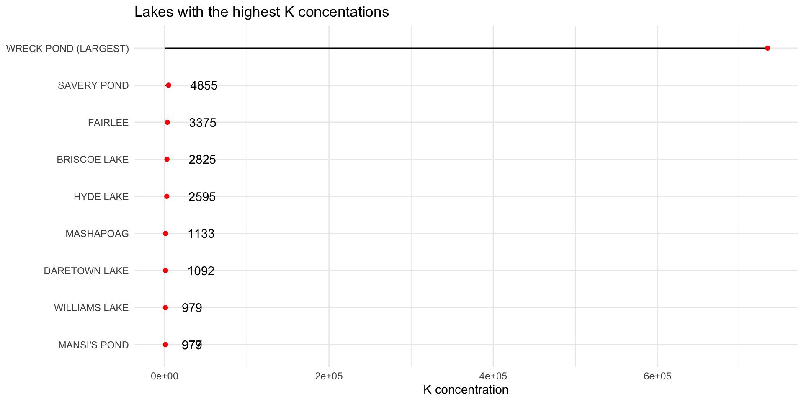
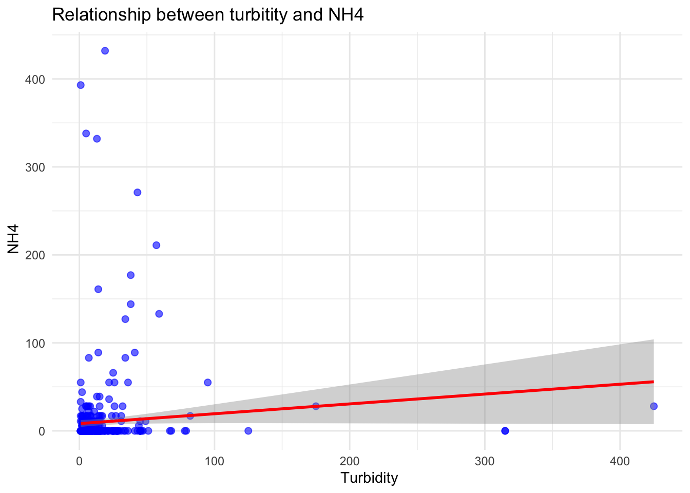
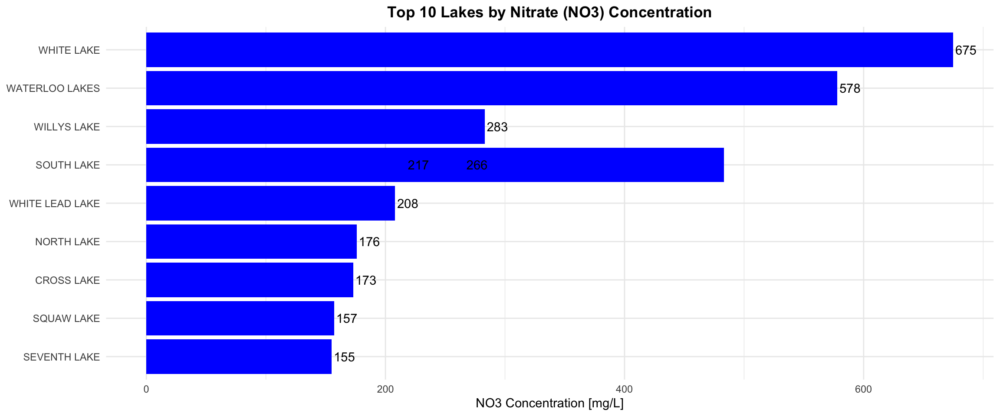

── Conflicts ────────────────────────────────────────── tidyverse_conflicts() ──
✖ dplyr::filter() masks stats::filter()
✖ dplyr::lag() masks stats::lag()
ℹ Use the conflicted package (<http://conflicted.r-lib.org/>) to force all conflicts to become errors
library(ggplot2)
# Read in Datalake_data <-read_csv(here("data/EPA_EMAP_CHEM.csv"))
Rows: 500 Columns: 50
── Column specification ────────────────────────────────────────────────────────
Delimiter: ","
chr (25): LAKENAME, LAKE_ID, ANCF, CAF, CLF, COLORF, COM_FLD, COM_LAB, CONDF...
dbl (25): PHEQ, DOC, CA, CL, ANC, CHLA, COLOR, COND, DEP_SAMP, DIC, K, LAT_D...
ℹ Use `spec()` to retrieve the full column specification for this data.
ℹ Specify the column types or set `show_col_types = FALSE` to quiet this message.
# Find the highest K value for each lakelake_data |>group_by(LAKENAME) |>summarize(max_K =max(K))
# A tibble: 340 × 2
LAKENAME max_K
<chr> <dbl>
1 ABANAKI 123
2 ALDER BROOK STREAM 72
3 ALEXANDRA LAKE 59
4 ANTEDILUVIAN POND 92
5 ARBUTUS POND 82
6 ARROWHEAD LAKE 179
7 ASPETUCK RESERVOIR 307
8 BABOOSIC LAKE 271
9 BARBADOES POND 494
10 BARKER POND 171
# ℹ 330 more rows
# Plot the number of counties rated 'Relatively High' in each state with a line graphlake_data |>arrange(desc(K)) |>slice_head(n =10) |>ggplot(aes(x =reorder(LAKENAME, K),y = K)) +geom_linerange(aes(ymin =0, ymax = K)) +geom_point(color ="red") +geom_text(aes(label = K, hjust =-0.8)) +labs(x ="Lakes",y ="K concentration",title ="Lakes with the highest K concentations") +coord_flip() +theme_minimal() +theme(axis.title.y =element_blank())

# Plot the relaionship between turbitity and NH4ggplot(lake_data, aes(x = TURB, y = NH4)) +geom_point(color ="blue", alpha =0.6, size =2) +geom_smooth(method ="lm", color ="red") +labs(title ="Relationship between turbitity and NH4",x =" Turbidity",y =" NH4" ) +theme_minimal()
`geom_smooth()` using formula = 'y ~ x'
Warning: Removed 5 rows containing non-finite outside the scale range
(`stat_smooth()`).
Warning: Removed 5 rows containing missing values or values outside the scale range
(`geom_point()`).

# Top 10 lakes by NO3 concentration as a bar chartlake_data |>arrange(desc(NO3)) |>slice_head(n =10) |>ggplot(aes(x =reorder(LAKENAME, NO3), y = NO3)) +geom_col(fill ="blue") +# bar chartgeom_text(aes(label = NO3), hjust =-0.1) +labs(x ="Lakes",y ="NO3 Concentration [mg/L]",title ="Top 10 Lakes by Nitrate (NO3) Concentration" ) +coord_flip() +theme_minimal() +theme(axis.title.y =element_blank(),plot.title =element_text(hjust =0.5, face ="bold"))

What have you learned about your data? Have any potentially interesting patterns emerged? Point to specific visualizations that you created as you describe your findings.
After creating my lollipop graph I noticed that Wreck Pond hand a really really really really high concentration of K. After looking at the other water measurements from this water body I saw that all of its measurements were insanely high. I’m going to have to dig into the meta data or the research this data was used in to see if this was a mistake of some kind. These outlines are also affecting a lot of the scatter plots I was trying to make. On the bar graph I made, for NO3, I found that luckily Wreck Pond didn’t have a crazy outlier, but for some reason South Lake has 2 max NO3 values and neither of which are at the end of the bar. I’m not sure how, but I will need to do more investigation.
In FPM #1, you outlined some questions that you wanted to answer using these data. Have you made any strides towards answering those questions? If yes, how so? If no, what next steps do you need to take (e.g. I need to create X plot type, I still need to track down Y data, I need to restructure existing data so that you can visualize it in Z ways, etc.)? Have any new questions emerged?
I’m still gathering the EPA threshold for the contaminants of interest in this data set. I have a couple of them, but not all of them yet. Also, I wanted to see which lakes have the highest concentration of Ammonia (NH₃) because its hazardous to humans, but I don’t actually have it in my data I mistook it for NH4. NH4 is less hazardous, so I will instead be looking into Nitrate.
What challenges do you foresee encountering with your data? These can be data wrangling and / or visualization challenges.
I really wanted to make a map with points representing the lakes and showing which lakes have high concentrations of unsafe contaminants. With this, I could even see if these contaminated lakes are close together and have a spatial relationship. Unfortunately, I have not been able to find this data, and it would be way too much to manually do it for all of my hundreds of lakes.